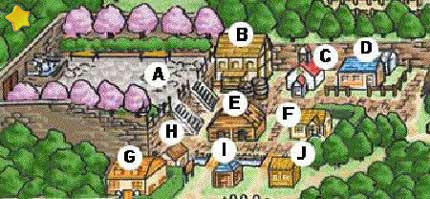

Mapa do Vilarejo Flowerbud |
|||||
|  A: Praça da Cidade A maioria dos festivais da cidade é aqui, no qual incluem a votação para o rei da colheita e o festival de ano novo... maioria das vezes no ano é quase completamente vazio.. B: Bar É aberto das 6:00 PM a meia noite todo dia exceto domingo... venha aqui e relaxe depois de um longo dia de trabalho em sua fazenda. C: Igreja Aqui é realizado a missa de domingo e todos os outros dias o pastor está aqui e disposto a responder suas perguntas. Seu casamento é realizado aqui também. D: Floricultura de Lilia e Basil Venha aqui para comprar todas as suas sementes para plantar, que incluem seus vegetais e flores, Basil e a filha de Lilia também mora aqui com eles. E: Loja de Ferramenta do Rick e Loja de lembrancinhas do Saibara Venha aqui para comprar coisas que você precisa para sua fazenda, que incluem o ordenhador para tirar leite das vacas, a tesoura para ovelhas e algumas mobilias para sua casa. Ricj também vende a Pena Azul tornando possivel se casar com a garota da cidade com um coração rosa. Saibara vende nic naks para você comprar. F: Café e Padaria Aqui eles vendem assados para você que também pode levar para casa ou comer no local. Eles também vendem chá e leite. É dirigido por Ellie e seu empregado Jeff. A avô dela também mora aqui com ela também. É aberto das 9:00 AM as 5:00 PM e é fechado nas segundas-feiras. G: Casa do Prefeito O prefeito mora aqui nesta casa enorme com sua filha Maria e esposa. H: Biblioteca Esta grande biblioteca tem uma empregada timida chmada Mary, ela adora ler e ela é filha do prefeito e sua esposa; Aberto das 9:00 AM as 5:00 PM fechado nos finais de semana. I: Casa da Parteira Aqui é onde a parteira mora, ela ajudará sua esposa a ter um filho. A neta dela também mora aqui. J: Loja de Poções Miso é dono desta loja e mora aqui com seus dois netos Kent e Stu. É aberto das 9:00 AM as 5:00 OM e é fechado nos finais de semana. |
|||||